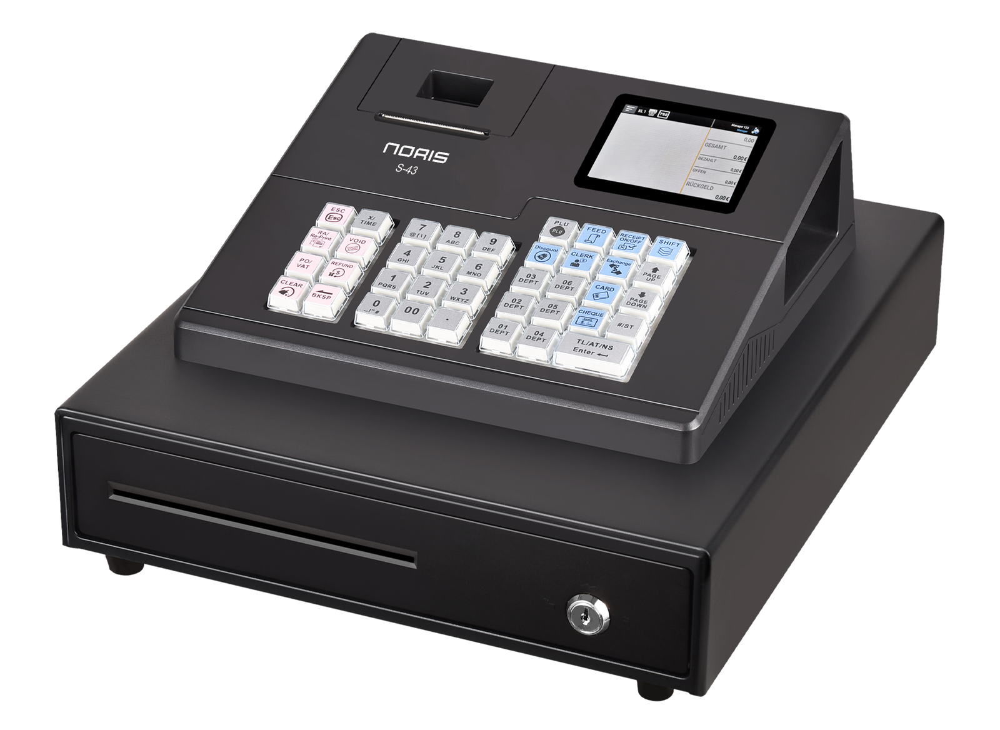
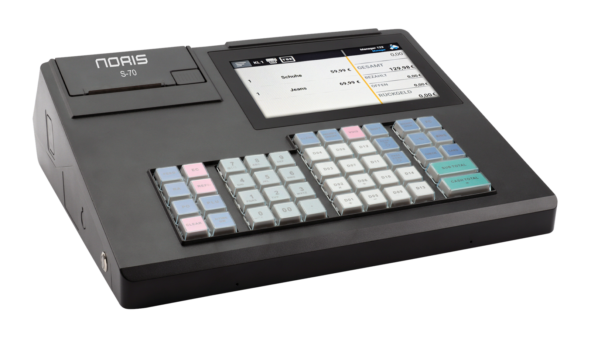
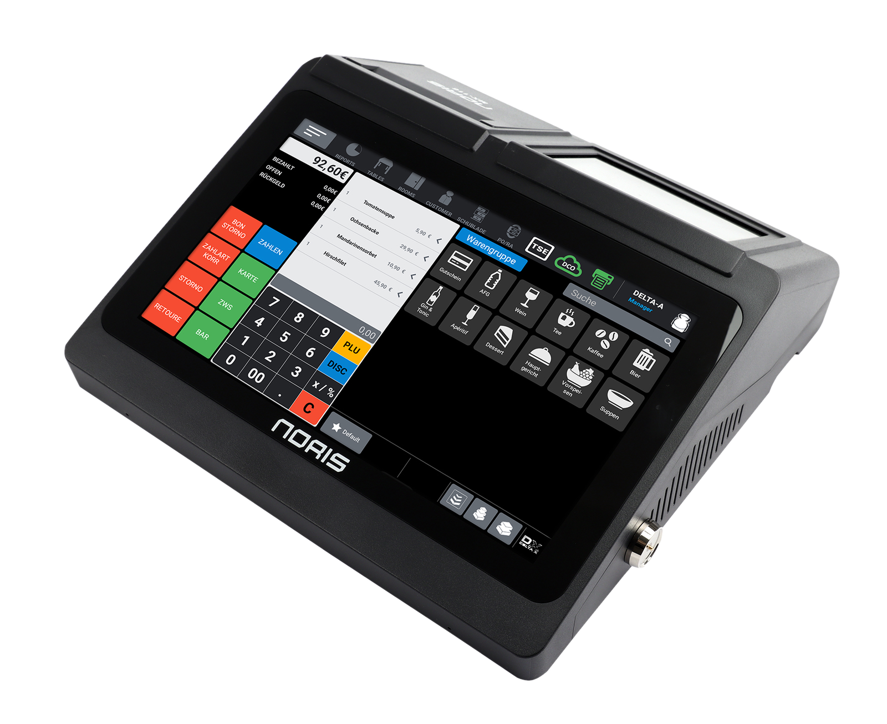
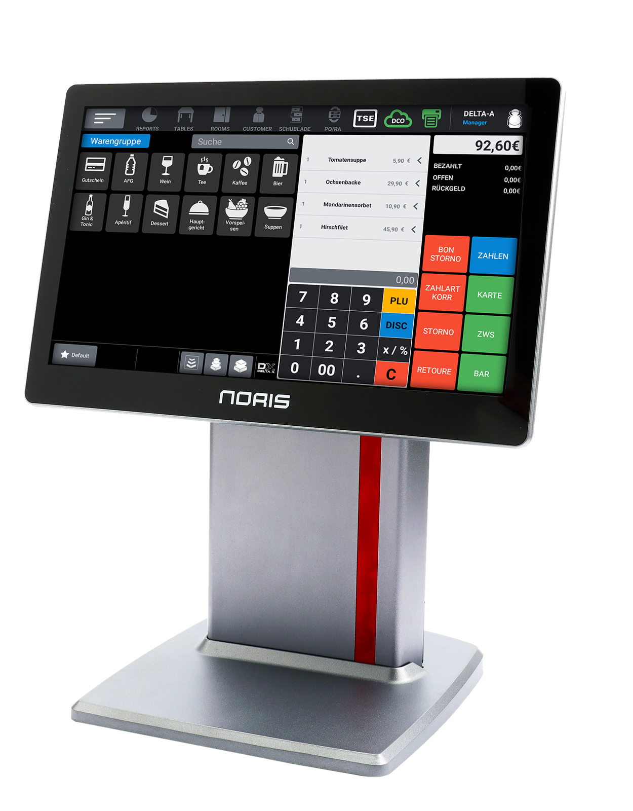
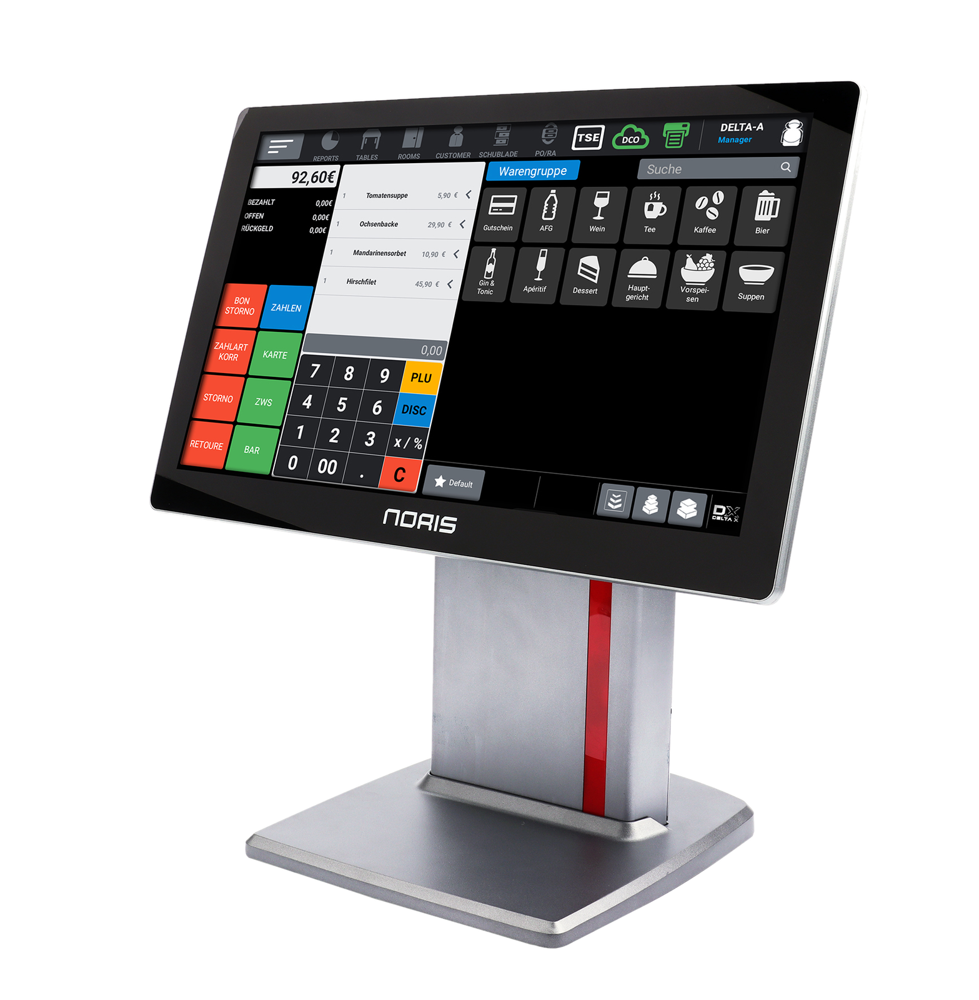
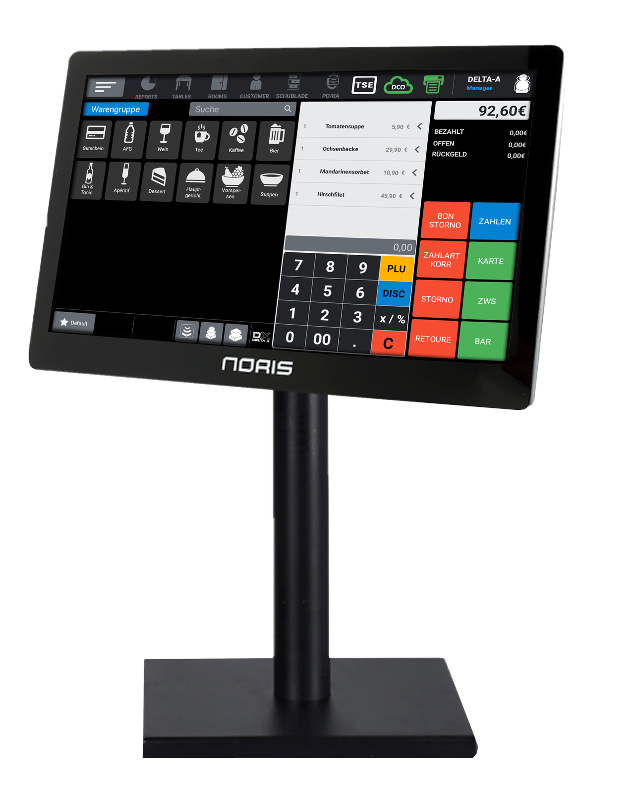

01

NORIS
S-43
Preise auf AnfrageAnfragen ↗
Moderne Kassenlösungen, die zu Ihrem Betrieb passen.
Modelle ansehen LA-156
LA-156Auswahl, Einrichtung und Betreuung passender NORIS Kassensysteme für unterschiedliche Anforderungen.



Android-Registrierkasse für Kleingastronomie, Café, Bistro und Einzelhandel.

Kompakte All-in-One Touchkasse für Friseure, Blumenläden, Imbisse und kleine Restaurants.



Vielseitige Touchkasse für Gastronomie und Einzelhandel mit 15,6" Full-HD-Touchdisplay.

Flexible Touchsysteme für anspruchsvolle Kassenplätze, Bäckereien, Supermärkte und Foodtrucks.

Flexible Touchsysteme für anspruchsvolle Kassenplätze, Bäckereien, Supermärkte und Foodtrucks.
Ein Kassensystem muss zu Abläufen, Mitarbeitern, Belegen, TSE, Zahlungsarten und Auswertungen passen. Deshalb starten wir mit einer kurzen Analyse statt mit blindem Geräteverkauf.
Branche, Prozesse, Geräte, Druck, Zahlung, Schnittstellen.
Hardware, Software, Artikelstruktur, Rechte und Layouts.
Installation, Testlauf, Schulung und Übergabe.
Kurze Anfrage senden, Anforderungen beschreiben und wir melden uns.